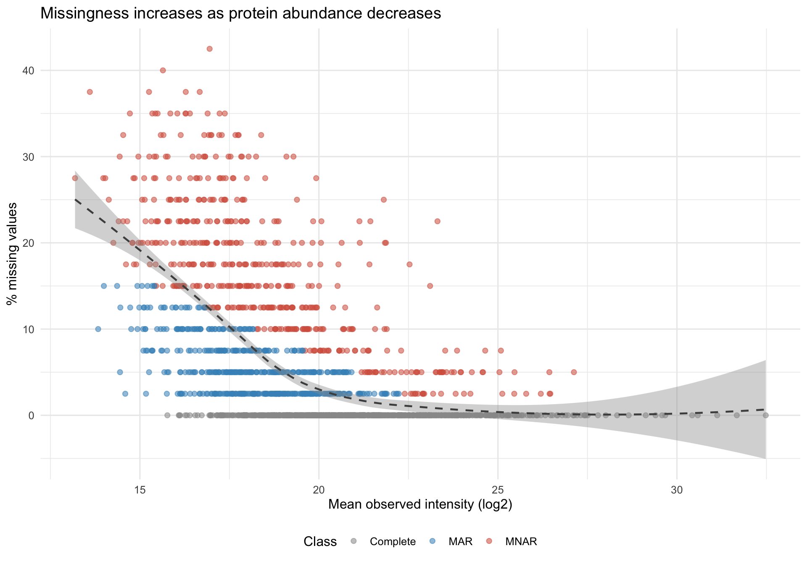
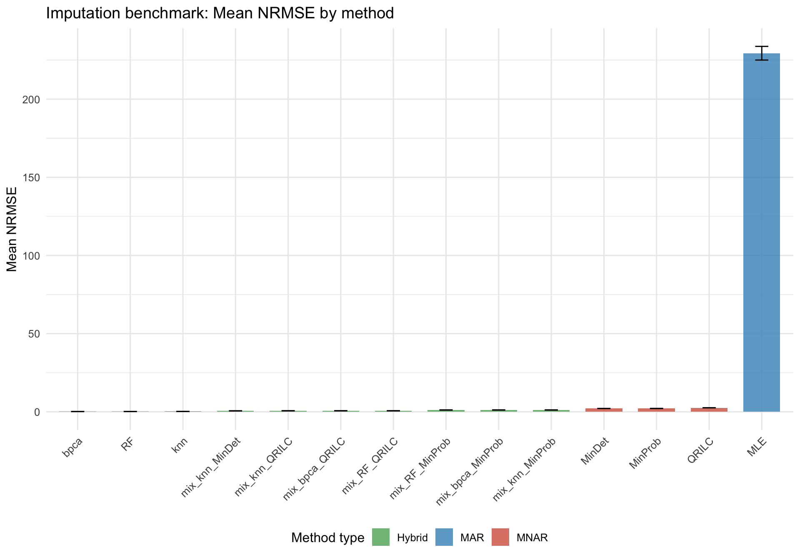
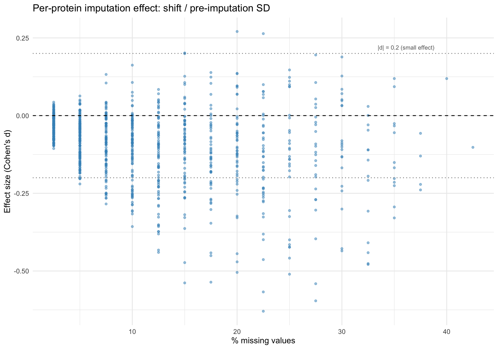
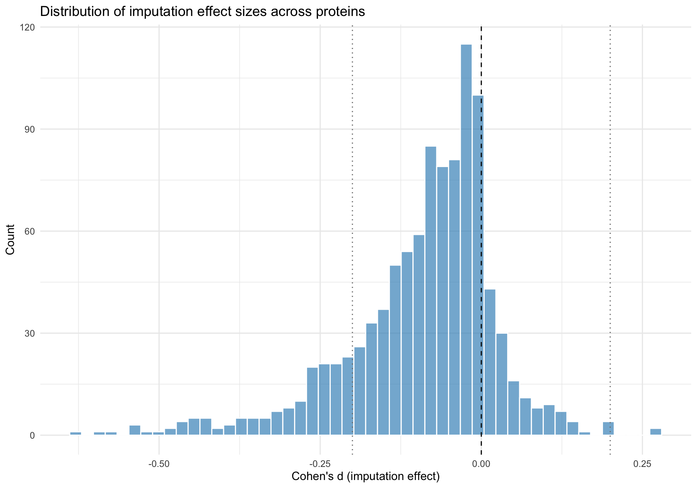
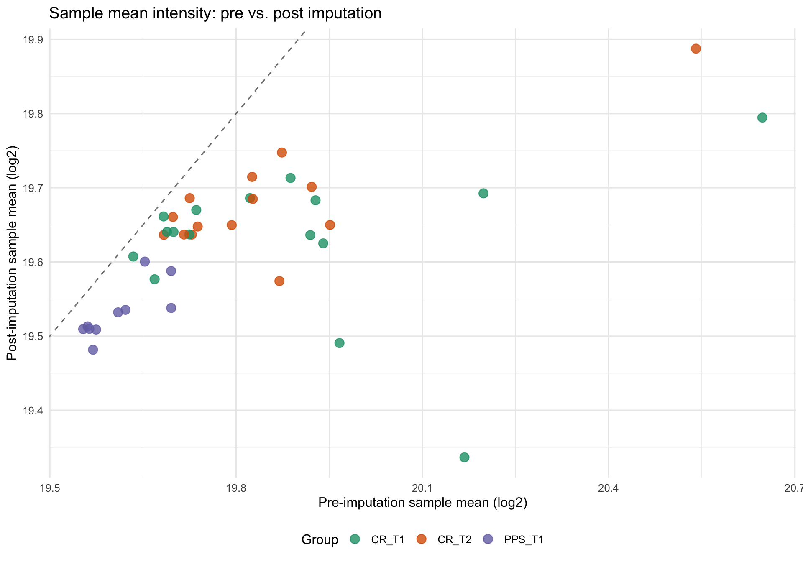

MAR/MNAR Classification, Benchmark, and Quality Audit
Author
DTL
Published
February 15, 2026
0 – Setup
This document presents the results of the CvH imputation pipeline. It does not execute the imputation analysis itself — the companion script CvH_imputation_run.R produces all data outputs and report PDFs. This narrative document reads those outputs and contextualizes them within the proteomics literature on missing data handling. All code chunks are display-only: they read pre-computed CSV files and generate tables or figures. No imputation computation is performed here.
Show code
if (!requireNamespace("pacman", quietly =TRUE)) install.packages("pacman")pacman::p_load(readr, dplyr, tidyr, knitr, ggplot2, patchwork, here, scales)# Paths to pre-computed outputs from CvH_imputation_run.Rdata_dir <-file.path(here::here(), "02_Imputation", "c_data")report_dir <-file.path(here::here(), "02_Imputation", "b_reports")norm_dir <-file.path(here::here(), "01_normalization", "c_data")meta_path <-file.path(here::here(), "00_input", "CvH_meta.csv")# Palettes consistent with the R scriptpal_mar <-c(MAR ="#4393C3", MNAR ="#D6604D", Complete ="#999999")pal_typ <-c(MNAR ="#D6604D", MAR ="#4393C3", Hybrid ="#5AAE61")pal_donut <-c(Complete ="#999999", MAR ="#4393C3", MNAR ="#D6604D")pal_bio <-c(CR_T1 ="#1B9E77", CR_T2 ="#D95F02", PPS_T1 ="#7570B3")
1 – Introduction: The Missing Data Problem in DIA-MS
Missing values are pervasive in label-free quantitative proteomics. A typical DIA-MS intensity matrix retains 5–20% missing entries even after quality filtering, and the manner in which those gaps are handled directly affects fold changes, variance estimates, p-values, and false discovery rates. Ignoring the problem — by analyzing only complete cases or by relying on a default imputation strategy without evaluation — introduces systematic bias whose direction and magnitude depend on the underlying missingness mechanism (Lazar et al., 2016).
The statistical framework for missing data distinguishes three mechanisms: values missing completely at random (MCAR), missing at random (MAR), and missing not at random (MNAR). In proteomics, MNAR is particularly important because it encompasses the dominant mode of data loss in mass spectrometry: peptides whose abundance falls below the detection limit produce no measurable signal, creating a systematic association between low intensity and missingness (Webb-Robertson et al., 2015).
DIA-MS acquires fragmentation spectra across the entire precursor mass range in each cycle, substantially reducing the stochastic missingness that plagues DDA. In DDA, the mass spectrometer selects a limited number of precursors per scan cycle, generating MAR-like missingness independent of peptide abundance. DIA eliminates this randomness by fragmenting all precursors within predefined isolation windows. The practical consequence is that missing values in DIA data are overwhelmingly MNAR — they arise because the peptide was genuinely below quantification threshold, not because the instrument selected other precursors (Kong et al., 2022).
This distinction has direct implications for method selection. MAR-focused methods (knn, bpca) exploit the correlation structure among observed values but systematically overestimate truly low-abundance missing entries because they predict from the center of the observed distribution (Lazar et al., 2016). MNAR-focused methods (MinProb, QRILC) draw replacement values from the lower tail, appropriately modeling below-detection censoring but underestimating values that are genuinely MAR (Webb-Robertson et al., 2015).
Because real datasets contain a mixture of both mechanisms, a single method applied uniformly is unlikely to be optimal. The mixed-imputation approach addresses this by first classifying each protein as MAR or MNAR, then applying the appropriate method to each subset (Lazar et al., 2016). Whether a mixed approach outperforms a well-chosen single method depends on the proportion of MAR versus MNAR proteins and the accuracy of the classification.
Given this complexity, benchmarking is essential. There is no universally best imputation method; the optimal choice depends on the missingness pattern, data structure, and downstream goals. A method that minimizes reconstruction error on one dataset may fail on another with different characteristics. Dataset-specific evaluation is the only reliable way to make this determination (Jin et al., 2021).
Our pipeline proceeds in three stages: (1) classify each protein as MAR or MNAR using msImpute selectFeatures; (2) benchmark 14 methods using NRMSE on 10% masked values across 20 iterations; (3) apply the best method and audit imputation quality. The distinction between benchmarking and blind application is consequential — many pipelines apply a default without evaluating appropriateness, which is problematic for mixed-mechanism datasets (Harris et al., 2023).
The imputation step sits between normalization (stage 01) and differential expression (stage 04). Its outputs feed into a sensitivity analysis (stage 03) that compares results across normalization and imputation combinations, providing an additional check on whether the imputation choice materially affects biological conclusions.
The CvH study compares cancer survivors (CR) who completed 12 weeks of resistance training against healthy age-matched controls (PPS), with CR participants randomized to creatine or placebo. Vastus lateralis biopsies were collected at baseline (T1) and post-training (T2) for CR, and at a single timepoint for controls. Condition-specific proteins may be systematically missing in one group, reinforcing the expectation that MNAR dominates the missingness pattern.
2 – MAR/MNAR Classification
Before selecting an imputation method, it is important to characterize the missingness mechanism. The distinction between MAR and MNAR determines which class of method is appropriate, and applying the wrong class introduces systematic bias whose direction is predictable from the mismatch (Lazar et al., 2016).
The msImpute package provides selectFeatures, which fits an evidence-based model (EBM) to distinguish proteins whose missingness pattern is consistent with random dropout (MAR) from those consistent with abundance-dependent censoring (MNAR). The function evaluates whether missing value patterns can be explained by observed intensity structure or require a left-censoring model (Wei et al., 2018).
When selectFeatures fails — due to insufficient patterns for model fitting — the pipeline falls back to an intensity heuristic: proteins with >30% missingness and below-median intensity, or >50% missingness regardless of intensity, are classified as MNAR. This heuristic captures the well-documented inverse relationship between abundance and missingness (Webb-Robertson et al., 2015). Proteins with no missing values are classified as Complete.
The classification serves two purposes. First, it informs the mixed imputation methods in the benchmark, which apply different algorithms to the MAR and MNAR subsets. Second, it provides interpretive context: if the dataset is predominantly MNAR, we expect MNAR-focused or hybrid methods to outperform pure MAR methods (Lazar et al., 2016).
The donut chart below provides a visual summary of the classification breakdown. Each slice represents the proportion of proteins assigned to one of three categories: Complete (no missing values), MAR (missingness unrelated to abundance), or MNAR (missingness driven by low abundance). The relative sizes immediately convey whether the dataset is dominated by one mechanism, which in turn guides expectations for benchmark results.
Proportion of proteins classified as Complete, MAR, or MNAR
The plot below shows the relationship between a protein’s average observed intensity and the percentage of samples in which it is missing. Proteins that are abundant tend to be detected reliably across all samples, while low-abundance proteins are more frequently missing. This pattern is the hallmark of MNAR missingness: values are absent precisely because the protein’s signal falls below the instrument’s detection limit, not by random chance. The loess smooth line highlights this trend.
Show code
miss_scatter <- miss_class %>%filter(!is.na(mean_int), !is.na(pct_miss))ggplot(miss_scatter, aes(x = mean_int, y = pct_miss, color = class)) +geom_point(alpha =0.55, size =1.8) +geom_smooth(method ="loess", se =TRUE, color ="grey30",linewidth =0.8, linetype ="dashed") +scale_color_manual(values = pal_mar) +labs(x ="Mean observed intensity (log2)",y ="% missing values",title ="Missingness increases as protein abundance decreases",color ="Class") +theme_minimal(base_size =12) +theme(legend.position ="bottom")

Protein missingness percentage versus mean observed intensity, colored by MAR/MNAR class
The bar chart below shows how many values are observed versus missing in each individual sample. This sample-level view complements the protein-level classification above. Samples with unusually high missingness may indicate technical issues (poor digestion, low loading), while consistent missingness across samples supports a protein-driven (MNAR) explanation. Bars are ordered by biological group so that patterns within and between conditions are visible.
Per-sample observed and missing value counts, ordered by biological group
For DIA-MS data, we expect the MNAR fraction to dominate among proteins with missing values, since the primary source of data loss is peptide abundance falling below the detection limit rather than stochastic precursor selection. If the MNAR fraction substantially exceeds MAR, this confirms alignment with the expected left-censoring model. The relative proportions also inform benchmark expectations: an MNAR-dominated dataset should favor methods drawing from the lower intensity tail.
The intensity distributions of MAR versus MNAR proteins should show clear separation, with MNAR proteins having lower mean observed intensity. This validates the classification — identical distributions would render the distinction meaningless. The scatter plot above confirms this separation visually.
Understanding the classification contextualizes the downstream quality audit. MNAR-classified proteins will receive imputed values from the left tail of their distribution, shifting their mean downward. This shift should be small (Cohen’s d < 0.2 for most proteins) if the imputation is well-calibrated, but proteins with high missingness will inevitably show larger shifts because more of their values are replaced (Wei et al., 2018).
3 – Benchmark Design and Rationale
Selecting an imputation method without benchmarking is equivalent to choosing a statistical model without checking assumptions. Our benchmark evaluates 14 candidate methods to identify which best reconstructs artificially masked observed values in this specific dataset.
The 14 methods span three categories. Three MNAR-focused methods draw from left-censored distributions: MinProb samples from a Gaussian centered at the lowest quantile, MinDet uses the minimum observed value, and QRILC fits a truncated Gaussian per protein. These are appropriate when missing values represent below-detection measurements (Lazar et al., 2016).
Four MAR-focused methods exploit correlation structure: knn imputes from weighted averages of similar proteins, bpca uses probabilistic PCA, MLE fits a multivariate Gaussian, and RF trains decision tree ensembles. These assume missingness is unrelated to abundance (Webb-Robertson et al., 2015).
Seven mixed methods combine one MAR and one MNAR method, applying each to its classified protein subset: knn+MinProb, knn+MinDet, knn+QRILC, bpca+MinProb, bpca+QRILC, RF+MinProb, and RF+QRILC. This tests whether mechanism-aware imputation outperforms uniform application (Lazar et al., 2016).
The benchmark masks 10% of observed values, imputes the full matrix, and compares imputed values at masked positions to the known truth. This masking rate balances stable error estimates against preserving enough observed values for imputation algorithms to function (Jin et al., 2021).
Reconstruction accuracy is measured by NRMSE (RMSE / SD of true values), a scale-invariant metric that directly quantifies reconstruction accuracy. Values near zero indicate near-perfect recovery; values near 1.0 indicate error comparable to natural variability (Jin et al., 2021).
The masking procedure is repeated 20 times with different random masks (seed = 42) to obtain stable distributions. During masking, proteins gaining additional missingness are temporarily reclassified to prevent MNAR methods from being evaluated on artificially masked high-abundance values.
The design intentionally includes methods expected to perform poorly under certain conditions because negative results are informative. If a pure MNAR method outperforms all others, it provides strong evidence of predominantly left-censored missingness. If a mixed method wins, the classification captures meaningful mechanistic heterogeneity (Harris et al., 2023).
Only the best-performing method (by mean NRMSE) is applied to the full dataset. The sensitivity analysis in stage 03 tests whether alternative strategies would change biological conclusions. No single method consistently outperforms all others across datasets (Jin et al., 2021; Harris et al., 2023), which is precisely why dataset-specific benchmarking is essential.
4 – Benchmark Results and Interpretation
The benchmark summary from CvH_imputation_run.R contains mean, standard deviation, and median NRMSE for each of the 14 methods across 20 masking iterations.
Benchmark results: 14 imputation methods ranked by mean NRMSE (20 iterations, 10% masking)
Method
Mean NRMSE
SD
Median NRMSE
Type
bpca
0.1612
0.0029
0.1612
MAR
RF
0.1747
0.0033
0.1741
MAR
knn
0.2300
0.0414
0.2025
MAR
mix_knn_MinDet
0.6083
0.0064
0.6091
Hybrid
mix_knn_QRILC
0.6481
0.0105
0.6477
Hybrid
mix_bpca_QRILC
0.6485
0.0099
0.6507
Hybrid
mix_RF_QRILC
0.6486
0.0110
0.6498
Hybrid
mix_RF_MinProb
1.1530
0.0153
1.1550
Hybrid
mix_bpca_MinProb
1.1592
0.0114
1.1560
Hybrid
mix_knn_MinProb
1.1594
0.0153
1.1568
Hybrid
MinDet
2.1326
0.0101
2.1311
MNAR
MinProb
2.1417
0.0100
2.1411
MNAR
QRILC
2.5567
0.0149
2.5578
MNAR
MLE
229.3889
4.3690
229.5137
MAR
Show code
bench_plot <- bench %>%mutate(method =factor(method, levels = method))ggplot(bench_plot, aes(x = method, y = mean, fill = type)) +geom_col(alpha =0.8, width =0.7) +geom_errorbar(aes(ymin = mean - sd, ymax = mean + sd),width =0.25, linewidth =0.5) +scale_fill_manual(values =c(MNAR ="#D6604D", MAR ="#4393C3", Hybrid ="#5AAE61")) +labs(x =NULL, y ="Mean NRMSE",title ="Imputation benchmark: Mean NRMSE by method",fill ="Method type") +theme_minimal(base_size =12) +theme(axis.text.x =element_text(angle =45, hjust =1),legend.position ="bottom")

Mean NRMSE across 14 imputation methods with standard deviation error bars
The ranking reveals whether single-mechanism or mixed-mechanism methods are better suited to this dataset. If a pure MNAR method ranks first, it suggests the dominant missingness is abundance-dependent left censoring and that correlation structure provides insufficient additional information. If a mixed method wins, the MAR/MNAR classification captures genuine heterogeneity that improves reconstruction (Lazar et al., 2016).
The standard deviation across iterations reflects method stability. A method with low mean but high SD may be sensitive to the specific masking pattern. The ideal method combines low mean NRMSE with low SD, indicating both accurate and consistent reconstruction.
Methods with very high NRMSE (above 1.0) are effectively worse than random noise and serve as negative controls. The spread between the best and worst methods quantifies the stakes of imputation method selection: a large spread means a default choice without benchmarking risks substantial bias.
The benchmark bar plot above provides detail on within-method variability. Regardless of which method wins, the benchmark provides the empirical justification for the imputation choice applied in the R script.
5 – Imputation Quality Audit
Selecting the best method by benchmark NRMSE is necessary but not sufficient. The benchmark evaluates reconstruction of artificially masked observed values, which are not truly missing. The actual missing values are predominantly low-abundance proteins below the detection limit, whereas masked values are drawn from the full observed distribution. The quality audit examines whether imputation produces a biologically plausible result on the real missing values.
The audit evaluates three dimensions: (1) per-protein effect sizes (Cohen’s d) quantifying how much imputation shifts each protein’s mean; (2) the relationship between effect size and missingness percentage; and (3) PCA and sample-level diagnostics assessing preservation of biological group structure.
Summary of per-protein imputation effect sizes (Cohen’s d)
Value
n_proteins
1008.0000
median_d
-0.0671
mean_d
-0.0907
sd_d
0.1168
q25_d
-0.1416
q75_d
-0.0181
pct_small
84.6000
pct_medium
14.6000
pct_large
0.8000
Proteins with higher missingness are expected to show larger effect sizes because a greater fraction of their values are replaced. The reference lines at d = +/-0.2 mark the conventional threshold for a small effect.
Show code
ggplot(audit, aes(x = pct_miss, y = effect_d)) +geom_point(alpha =0.5, size =1.2, color ="#4393C3") +geom_hline(yintercept =0, linetype ="dashed", color ="black") +geom_hline(yintercept =c(-0.2, 0.2), linetype ="dotted", color ="grey50") +annotate("text", x =max(audit$pct_miss, na.rm =TRUE) *0.85, y =0.22,label ="|d| = 0.2 (small effect)", size =3, color ="grey40") +labs(x ="% missing values", y ="Effect size (Cohen's d)",title ="Per-protein imputation effect: shift / pre-imputation SD") +theme_minimal(base_size =12)

Imputation effect size (Cohen’s d) versus percent missingness per protein
A distribution centered near zero with most values within the +/-0.2 band indicates the imputation preserves original intensity structure. A negative skew is expected for MNAR-focused methods, which pull post-imputation means downward.
Show code
ggplot(audit, aes(x = effect_d)) +geom_histogram(bins =50, fill ="#4393C3", alpha =0.7, color ="white") +geom_vline(xintercept =0, linetype ="dashed", color ="black") +geom_vline(xintercept =c(-0.2, 0.2), linetype ="dotted", color ="grey50") +labs(x ="Cohen's d (imputation effect)", y ="Count",title ="Distribution of imputation effect sizes across proteins") +theme_minimal(base_size =12)

Distribution of per-protein imputation effect sizes (Cohen’s d)
Cohen’s d below 0.2 is conventionally a small effect — the shift is less than one-fifth of the natural variability. If the vast majority of proteins fall within this band, imputation is unlikely to distort downstream differential expression. Proteins exceeding |d| = 0.5 warrant scrutiny, as the imputation may have substantially altered their intensity distribution.
For MNAR-focused methods, we expect a negative correlation between effect size and missingness: more missing values means more imputed left-tail draws, producing larger downward shifts. A linear relationship indicates consistent behavior; nonlinearity could signal model misspecification.
The plot below shows PCA projections of the protein intensity matrix before and after imputation, side by side. PCA reduces the high-dimensional protein data to two summary axes that capture the largest sources of variation. If imputation is well-behaved, the biological group structure (CR at baseline, CR post-training, and healthy controls) should be preserved: groups that were separated before imputation should remain separated, and their relative positions should not shift. Artifactual clustering introduced by imputation would appear as groups merging or new separations appearing that were not present in the pre-imputation projection.
PCA of protein intensities before (left) and after (right) imputation, colored by biological group
The plot below overlays the intensity distributions of observed values (from the pre-imputation matrix) and imputed values (values that were missing before imputation but present after). For MNAR-focused methods, imputed values are expected to appear as a secondary peak or shoulder in the lower tail of the intensity distribution, reflecting the assumption that missing proteins were below the detection limit. If the imputed values overlap substantially with the observed distribution rather than sitting below it, the method may be overestimating missing values — a sign that an MAR method was applied to MNAR data.
Intensity distribution: observed values versus imputed (filled-in) values
The plot below assesses whether imputation systematically shifts any sample’s overall intensity. For each sample, the mean log2 intensity is computed before and after imputation and plotted against the identity line (y = x). Points lying exactly on the identity line indicate zero net shift; points below it indicate the imputation lowered the sample mean (expected for MNAR methods that fill in low-tail values), and points above indicate an upward shift. Small, consistent downward deviations are expected and benign. Large or heterogeneous deviations would suggest the imputation is differentially affecting certain samples, which could introduce bias into group comparisons.
Show code
pre_means <-colMeans(pre_mat[, sample_cols_pca], na.rm =TRUE)post_means <-colMeans(post_mat[, sample_cols_pca], na.rm =TRUE)shift_df <-tibble(Col_ID = sample_cols_pca,pre_mean = pre_means,post_mean = post_means) %>%left_join(meta_pca %>%select(Col_ID, Group_Time), by ="Col_ID") %>%mutate(BioGroup =case_when( Group_Time %in%c("CRE_T1", "PLA_T1") ~"CR_T1", Group_Time %in%c("CRE_T2", "PLA_T2") ~"CR_T2", Group_Time =="H_T1"~"PPS_T1",TRUE~ Group_Time ))ggplot(shift_df, aes(x = pre_mean, y = post_mean, color = BioGroup)) +geom_abline(slope =1, intercept =0, linetype ="dashed", color ="grey50") +geom_point(size =3.5, alpha =0.8) +scale_color_manual(values = pal_bio) +labs(x ="Pre-imputation sample mean (log2)",y ="Post-imputation sample mean (log2)",title ="Sample mean intensity: pre vs. post imputation",color ="Group") +theme_minimal(base_size =12) +theme(legend.position ="bottom")

Pre- versus post-imputation sample means with identity line, colored by biological group
These diagnostics inform a binary decision: is the imputation trustworthy for downstream differential expression, or should we default to a non-imputed pathway? Trustworthy imputation shows: (1) most effect sizes below |d| = 0.2, (2) a monotonic effect-size/missingness relationship, (3) preserved PCA group structure, and (4) sample means near the identity line.
The quality audit operates at the global level and cannot detect whether specific biologically important proteins have been distorted. The sensitivity analysis in stage 03 addresses this by comparing differential expression results across multiple imputation strategies, identifying proteins whose significance is sensitive to the imputation decision.
6 – Conclusion
This document has presented the results of the CvH imputation pipeline, which classifies missingness mechanisms, benchmarks 14 imputation methods, applies the best-performing method, and audits imputation quality through multiple complementary diagnostics.
The MAR/MNAR classification provides the mechanistic foundation for method selection, confirming whether the missingness pattern aligns with the expected left-censoring model for DIA-MS data. The benchmark identifies the method that best reconstructs masked values, providing empirical justification. The quality audit evaluates whether the imputation preserves biological signal and quantifies per-protein effect sizes.
The imputed matrix (01_imputed.csv) serves as the primary input for differential expression in stage 04. The sensitivity analysis in stage 03 will compare results across a normalization-imputation grid to determine whether the choice materially affects final biological conclusions. If substantial discordance is found, the non-imputed pathway provides a conservative fallback avoiding imputation-induced bias at the cost of reduced power.
References
Lazar C, Gatto L, Ferro M, et al. (2016). Accounting for the multiple natures of missing values in label-free quantitative proteomics data sets to compare imputation strategies. Journal of Proteome Research 15(4):1116-1125.
Webb-Robertson BM, Wiber HK, Matzke MM, et al. (2015). Review, evaluation, and discussion of the challenges of missing value imputation for mass spectrometry-based label-free global proteomics. Journal of Proteome Research 14(3):920-930.
Kong W, Hui HWH, Peng H, et al. (2022). Dealing with missing values in proteomics data. Proteomics 23(23-24):e2200092.
Wei R, Wang J, Su M, et al. (2018). Missing value imputation approach for mass spectrometry-based metabolomics data. Scientific Reports 8:663.
Jin L, Bi Y, Hu C, et al. (2021). A comparative study of evaluating missing value imputation methods in label-free proteomics. Scientific Reports 11:1760.
Valikangas T, Suomi T, Elo LL (2018). A systematic evaluation of normalization methods in quantitative label-free proteomics. Briefings in Bioinformatics 19(1):1-11.
Harris L, Fondrie WE, Oh S, Noble WS (2023). Evaluating proteomics imputation methods with improved criteria. Journal of Proteome Research 22(11):3427-3438.
O’Brien JJ, Bhatt DK, Engel JM, et al. (2018). Label-free quantitative proteomics analysis with implications for missingness and filtering strategies. Annals of Applied Statistics 12(4):2484-2510.